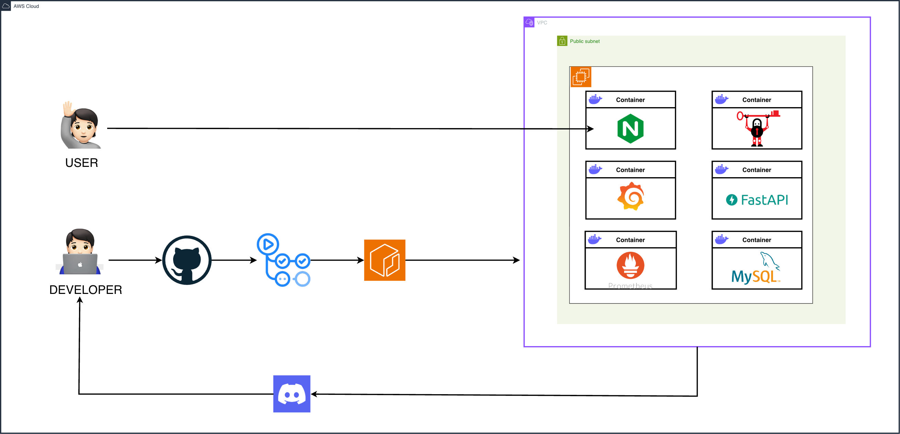
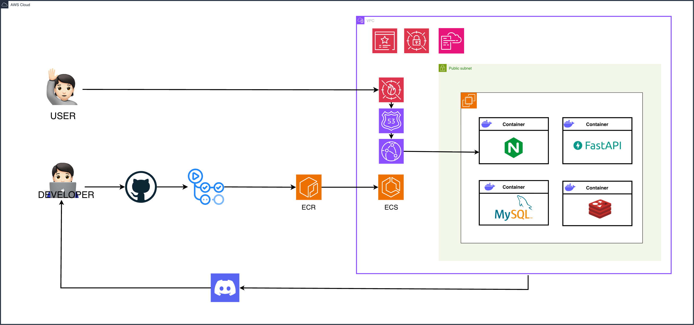

Day-One is a web service that summarizes course syllabi using the Google Gemini API and automatically saves key dates and assignments to Google Calendar.


Migrated from EC2+Docker to ECS+CloudFront+WAF. Achieved 70% cost savings ($88→$27/mo) by replacing Private Subnet+NAT Gateway with WAF-based perimeter defense.
GitHub Actions for automated build/deploy, CloudFormation for infrastructure-as-code, Docker containerization for all services.
Decoupled file upload from AI processing. Login p95 dropped from 58s to 54ms (1000x improvement) under 15 concurrent users.
Detected production scanning attacks on Nginx. Deployed CloudFront+WAF+Security Group to eliminate direct server exposure.